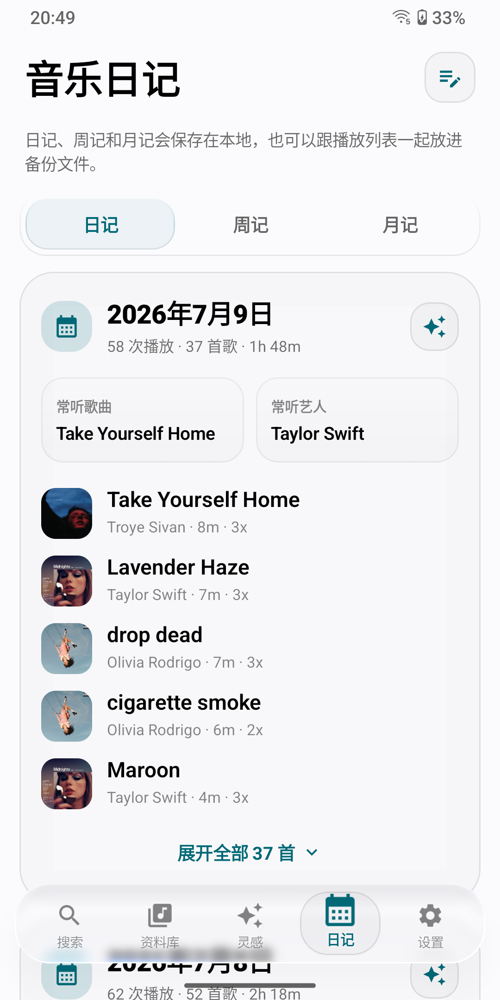
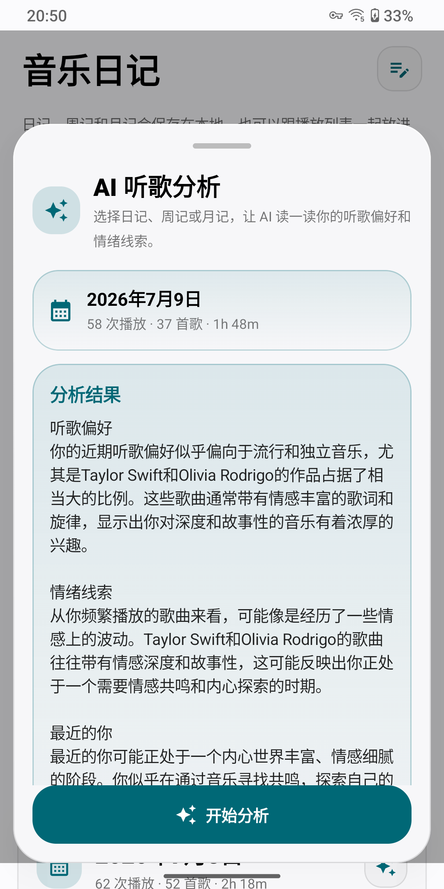

它从一个很简单的愿望开始
本地音乐播放器不应该只是“能播放”。它应该安静收好你的专辑、歌词、播放列表和听歌记忆，也应该在你不知道想听什么的时候，轻轻递给你一点灵感。
所以灵感音乐把资料库、正在播放、歌词、日记、备份和 AI 推荐放进同一个体验里。它不是为了替代你的音乐品味，而是帮你把那些散落在设备里的歌重新整理成生活的一部分。
Local-first Android music player
灵感音乐不是把歌堆进列表里就算完成。它把本地资料库、Liquid Glass 视觉、智能歌词、AI 推荐和音乐日记放在一起，让每一次打开都像重新遇见自己的歌。

Why Inspire Music
本地音乐播放器不应该只是“能播放”。它应该安静收好你的专辑、歌词、播放列表和听歌记忆，也应该在你不知道想听什么的时候，轻轻递给你一点灵感。
所以灵感音乐把资料库、正在播放、歌词、日记、备份和 AI 推荐放进同一个体验里。它不是为了替代你的音乐品味，而是帮你把那些散落在设备里的歌重新整理成生活的一部分。
“下雨天散步”“睡前安静一点”“运动前热身”，把心情交给它。
日记、周记和月记记录真正听过的音乐，再用 AI 读出你最近的偏好和情绪线索。
Built for listening
底栏、迷你播放器和关键控件统一成通透玻璃质感，浅色深色都保留清晰轮廓。
歌曲、专辑、艺人、播放列表和我的喜爱集中管理，适合认真整理音乐的人。
专辑封面、进度、音量和播放控制被收进沉浸式页面，横屏也能保持舒展。
本地、内嵌和在线歌词配合缓存管理，尽量少打扰你的播放。
播放列表、听歌记录和最近播放可以导出导入，换设备或重装时不用从零开始。
像系统存储页一样查看本地音乐占用，知道自己的收藏到底有多大。
Light and dark





Ready to listen
APK 会发布在 GitHub Releases。核心播放、本地资料库、歌词缓存、音乐日记和数据备份都优先在设备本机完成。